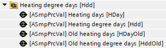
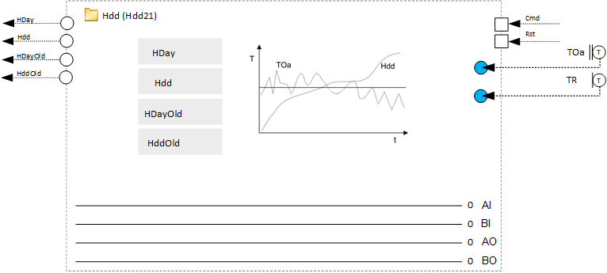
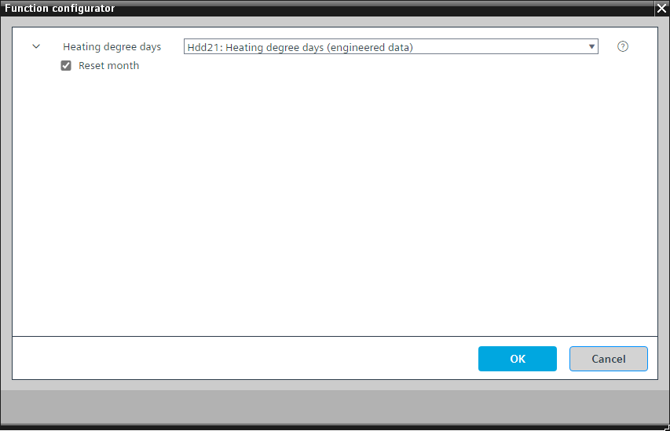
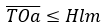
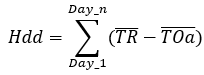

[Hdd21] 供暖度天数
Program block, name / node subtype: [Hdd21] Heating degree days
Library hierarchy: Heating functions
Family: Hdd
项目树 | 图表 |
|---|---|
|
 |  |
Configurator


程序块存储在没有 I/Os. 的库中 使用auto-create and auto-connect函数创建 I/Os 和 /or 将它们连接到接口块，例如 R_A、CMD_B。或者，从包含库中预定义 I/Os 的文件夹中取出 I/Os，并从工厂中取出 /or，并将它们连接到接口块。
根据室外空气和室温计算供暖天数和供暖度天数。
Calculating heating days
当室外气温 (TOa) 的日平均值低于供暖限值时，这一天被视为供暖日。

在这种情况下，供暖天数 (HDay) 增加 1。
Calculating heating degree days
当确定供暖日时，计算室外气温日平均值与室温日平均值之间的差值，并将结果添加到供暖度日数（Hdd）中。

Reset
供暖天数和供暖度数天数可以通过输入引脚[重置]重置为零。最后一次重置之前的值存储在 [HDayOld] 和 [HddOld] 中。
“重置月份”比较设置的月份和当前日期。如果日期匹配，程序会自动重置 [HDay] 和 [Hdd] 中的所有值，但将旧值保存在 [HDayOld] 和 [HddOld] 中。
该程序块具有以下可选功能：
Option: Reset month
比较设置的月份和当前日期。如果日期匹配，程序会自动重置供暖天数和供暖度数天数的所有值，但会保存旧值。
姓名 | 描述 | 类型 | 报警/通知类 | 趋势/类型 | |
|---|---|---|---|---|---|
HDay | Heating days | ASmpPrcVal: Analog simple process value | No | No | |
Hdd | Heating degree days | ASmpPrcVal: Analog simple process value | No | No | |
HDayOld | Old heating days | ASmpPrcVal: Analog simple process value | No | No | |
HddOld | Old heating degree days | ASmpPrcVal: Analog simple process value | No | No | |
描述 |
|---|
Reset month |